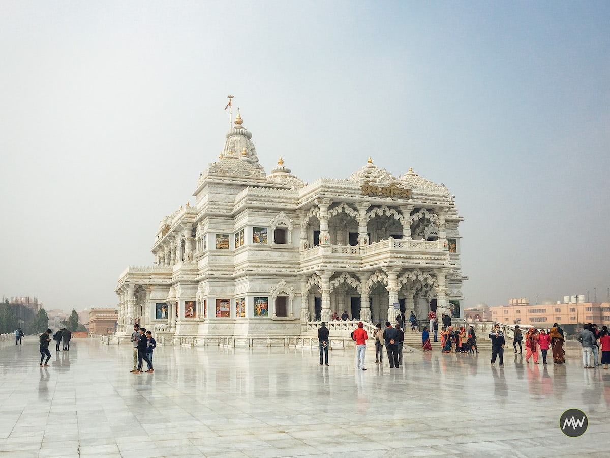
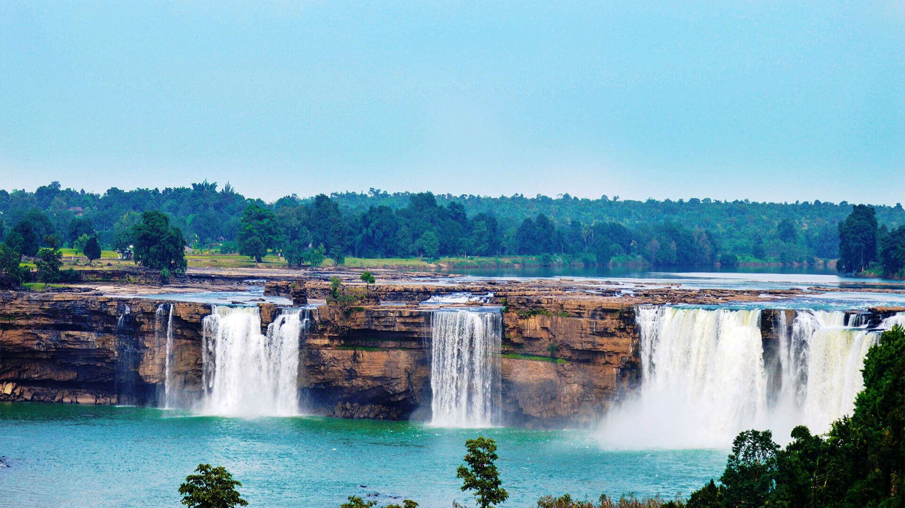

Varanasi, also known as Banaras or Kashi, is one of the oldest continuously inhabited cities in the world and is considered the spiritual capital of India.
It is located on the banks of the sacred Ganges River in the state of Uttar Pradesh.
Varanasi is famous for its ghats, which are series of steps leading down to the river. These ghats are used for various religious activities, including bathing, prayers, and cremation ceremonies.
The city is dotted with numerous temples, including the Kashi Vishwanath Temple dedicated to Lord Shiva, the Durga Temple, Sankat Mochan Hanuman Temple, and the Tulsi Manas Temple.
Madhura and Vrindavan

Mathura and Vrindavan are two ancient towns in Uttar Pradesh associated with the life and teachings of Lord Krishna, one of the most revered deities in Hinduism.
Mathura is believed to be the birthplace of Lord Krishna, and the Krishna Janmabhoomi Temple complex marks the exact spot of his birth. Other important temples in Mathura include Dwarkadhish Temple and the Vishram Ghat.
Vrindavan is where Lord Krishna spent his childhood and is famous for its numerous temples dedicated to him and his consort, Radha. The Banke Bihari Temple, ISKCON Temple, and Prem Mandir are among the most visited temples in Vrindavan.
Chitrakoot

Chitrakoot is a tranquil town nestled in the Vindhya Range of mountains, located on the banks of the Mandakini River in Uttar Pradesh.
It is considered a sacred place in Hinduism and is mentioned in the epic Ramayana as the place where Lord Rama, his wife Sita, and his loyal brother Lakshmana spent a significant portion of their exile.
Chitrakoot is dotted with numerous temples and ashrams dedicated to Lord Rama, Sita, and other characters from the Ramayana. The Kamadgiri Hill, Hanuman Dhara, Ramghat, and Bharat Milap Temple are some of the important religious sites in the town.